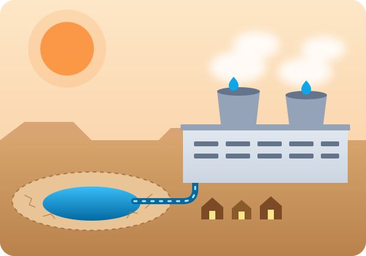

Every prompt has a physical cost.
Chatbots, image generators and AI study tools feel weightless. But every answer is computed in a data center that runs on electricity and is cooled with water, and that demand is growing faster than almost anything else on the grid.
The cloud lives on the ground
"The cloud" is really millions of computers packed into warehouse-sized buildings. AI makes them work harder than ever before.
Electricity used by data centers worldwide in 2024, about 1.5% of all electricity on Earth.
IEA, 2025Expected growth in data center electricity use by 2030, driven largely by AI.
IEA, 2025Share of all U.S. electricity data centers could use by 2028, up from 4.4% in 2023.
Lawrence Berkeley National Lab, 2024Water that can be used for every 10 to 50 chatbot responses, about one bottle of water.
Li et al., 2023The life of a single prompt
A question to a chatbot takes seconds. Behind it is a chain of physical systems that all consume resources.
You send a prompt
Your question travels over the internet to a data center that may be hundreds of miles away.
GPUs do the math
Powerful chips run billions of calculations to generate each word. That takes far more electricity than a normal web search.
The chips get hot
All that electricity turns into heat. Cooling systems, often evaporating fresh water, keep the servers from overheating.
The grid fills the gap
Power plants supply the electricity. In much of the world that still means burning fossil fuels and releasing CO₂.
What does your AI use add up to?
Move the sliders to estimate the electricity and water behind your AI use over a semester. One prompt is tiny. Millions of students sending prompts every day is not.
Estimates use 0.3 to 3 watt-hours and 10 to 50 mL of water per response, based on published research. The real numbers vary by AI model, data center and location, so we show a range.
College students are AI's power users
Students are some of the heaviest everyday users of AI tools, mostly for schoolwork: summarizing readings, brainstorming essays, debugging code and studying for exams. Most of us never think about the physical cost behind each answer.
We are also the future workers, voters and decision-makers who will shape how AI is built, powered and regulated. The habits and expectations we set now matter.
This isn't about never using AI. It's about using it on purpose, knowing what it costs, and pushing for it to be powered responsibly.

Three sides of the same problem

Where the power comes from
How much electricity AI uses, why demand is exploding, and the carbon emissions behind it.
Read more →
Who pays the cost
The fresh water used to cool data centers, often in drought-prone areas, and the communities that live next door.
Read more →What you can do
Concrete steps for using AI on purpose and pushing schools and tech companies toward clean energy.
Read more →Sources
- International Energy Agency. (2025). Energy and AI. https://www.iea.org/reports/energy-and-ai
- Shehabi, A., et al. (2024). 2024 United States data center energy usage report. Lawrence Berkeley National Laboratory.
- Li, P., Yang, J., Islam, M. A., & Ren, S. (2023). Making AI less "thirsty": Uncovering and addressing the secret water footprint of AI models. arXiv. https://arxiv.org/abs/2304.03271
- You, J. (2025). How much energy does ChatGPT use? Epoch AI.
- de Vries, A. (2023). The growing energy footprint of artificial intelligence. Joule, 7(10), 2191–2194.